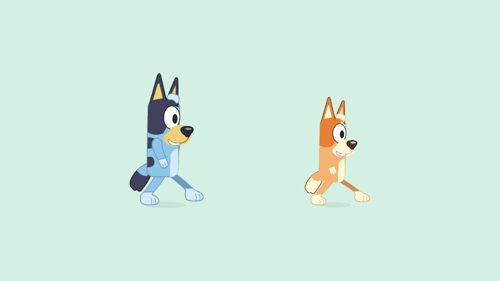

Current build plan · Editable source
Side-view walking — build 119
September 26, 2026 · CHAR-01 / WALK-01, G6 presentation. The user clarified that the body must face sideways when moving left or right. This bounded follow-up adds editable profile artwork for Bluey and Bingo to the actual game. It does not declare the walk visually approved.
Result
Horizontal and diagonal walking now use a side silhouette: a narrower torso, projecting muzzle, one visible eye, overlapping shoulders/hips and feet pointing along the walk. Reversing mirrors that profile toward the new direction. The existing front drawing returns when the character settles to standing and remains in use for straight vertical movement, sitting, dancing and bouncing. Carrying uses the same directional walk while preserving the real held item.
Both drawings share the same motion phase and blink clock; only one rig is visible. Switching drawings does not move the player or restart the step. The profile has its own hip attachments, so it does not apply the front drawing's previous walking-lane compression. Gameplay speed, joystick, menus, save schema and shared-world protocol are unchanged.
Sources: Bluey profile, Bingo profile, layer/pivot contract. Each drawing keeps twelve editable layers. Export manifests record source/contract/PNG hashes, and the Unity build hook validates both front and profile exports before assembling character assets.


These are newly authored adaptations of the project's reference-guided character studies, not official production turnarounds. Rightward walking mirrors the left profile; separately authored asymmetric coat views, back views and turning poses remain future work. Two cached rigs add rendering data and pose work; A10 performance is unmeasured.
Native preview and checks
Open the three-second preview. It contains 180 fixed-time native frames: idle, walking right, reversing left and stopping. This is a deterministic animation preview, not measured device frame rate. Sampled contact, passing, reversal and stopped frames were visually inspected.

| Verification | Result |
|---|---|
| Twelve rig trials | Bluey/Bingo × left/right × 30/60/120 FPS pass contact, clearance, cadence and facing checks. The test also requires the profile during walking, one active drawing and the front drawing after settling. |
| Two-client walking | Actual home walk/reversal/stop and slower carrying preserve the real bucket holder. Local/remote traces retained. |
| Chooser and property | Phone/tablet layouts retain visible bottom-edge Bluey/Bingo, the single home destination, real travel barrier and continuous house/backyard walking. |
| Home regression | Occupied seats/character changes, radio/dance/mute, trampoline/exit, shed storage/travel/retrieval and offline cold reopen pass. |
| Builds | Fresh Windows client/server and family-signed Android release 119 succeed. No debug artifact substituted. |
Commands: Tools/Build-NetworkProbe.ps1 -BuildNumber 119; uv run --offline --with cryptography python Tools/Test-WalkAnimation.py 119, Tools/Test-HomeWorld.py 119 and Tools/Test-HomeNavigation.py 119; Tools/Build-AndroidLAN.ps1 -BuildNumber 119.
The native tests use temporary isolated clients/servers. Raw evidence stays under LocalData/SharedGarden/6bd1d1ea40634c7785ef1ac65d8b8f6b/walk, 9c05290471a146b7b961add537169fae/home and c493bf85732b485ea9a5adc135c6a059/home-navigation.
Android delivery
Samsung updated 118 → 119 through adb install -r. Existing and new package/signing identities were checked first. Pulling the installed APK back produced the exact fresh artifact hash, and launching the exact game package succeeded. All 879 build-manifest entries matched the current files before installation. Documentation was updated afterward; generated profile import metadata then received whitespace-only cleanup. Source artwork, exported PNGs and runtime code remain the tested inputs.
Both solo saves, all five saved adventures and their selection record are byte-identical before/after installation. Private backups and screenshots remain in LocalData/Verification/android-profile-119; installation evidence is in LocalData/Verification/android-phone-ac48af00024d4fb4aa9759e6b3c662f7. Sanitized delivery record.
Device UI check pending: Android reports the phone locked. The package is installed and its saved records are retained, but visible gameplay and the on-phone side-view animation still need the unlocked screen. User visual approval also remains open.
APK SHA-256: d083429c66e2347bf08f64efef402cc04436929f1269c3e52143fa537d76749f. Live server/helper remains 110/content 4, phone 119/content 5/schema 4, Apple devices 101 with their rollout deferred. The phone remains on solo play until coordinated content-5 shared delivery. Native 16 KB and A10 frame-time/memory qualification remain open.
Next bounded task
Resume ART-HOME-02: clean living-room base and one layered sofa, then current backyard fixtures and kitchen foundation. The duplicate furniture correction is researched but not part of 119. Kitchen features and bedrooms follow that scene cleanup. Current work record.